House of Brands — Partners Group's watch portfolio
Universal Genève
Ultra-premium/haute horlogerie tier. Founded 1894. Acquired by Breitling, end of 2023.
universalgeneve.com
Gallet
Accessible/adventure tier. Founded 1826. Acquired by Breitling, spring 2025; relaunched 2026.
gallet.com
Breitling — one model per current collection, 10 collections
Navitimer B01 Chronograph 43
$10,300
View →
Chronomat B01 Chronograph 42
$9,900
View →
Super Chronomat B01 44
$16,350
View →
Superocean Heritage B01 Chronograph 42
$10,550
View →
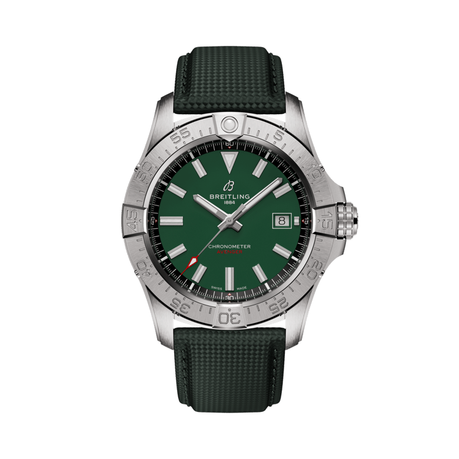
Avenger Automatic 42
$4,900
View →
Super AVI B04 Chronograph GMT 46 — P-51 Mustang
$30,900
View →
Premier B01 Chronograph 42
$22,900
View →
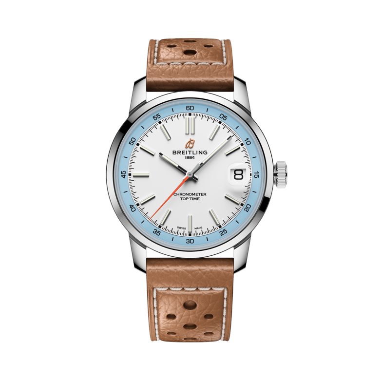
Top Time B31
$5,850
View →
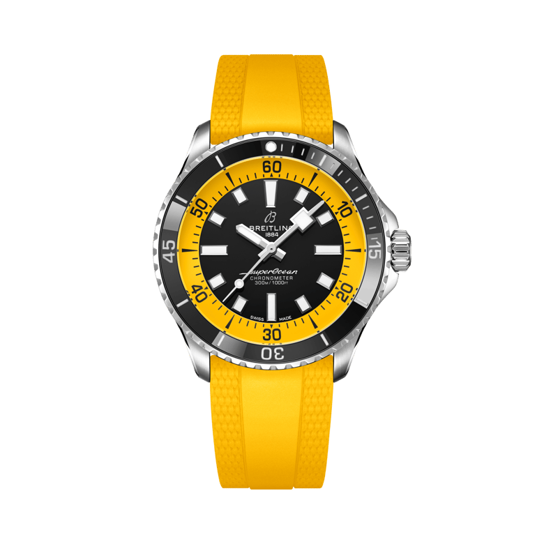
Superocean Automatic 42
$5,850
View →
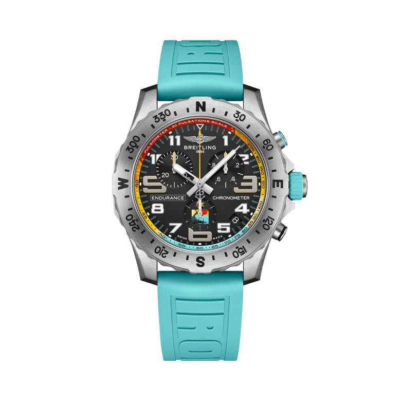
Endurance Pro 44 — IRONMAN® World Championship 2026
$4,350
View →
The first-listed (entry) reference in each of Breitling's 10 current collections — not a published sales or popularity ranking; Breitling does not publish a best-seller list. Prices: official U.S. list prices, USD, breitling.com. Checked 16 September 2026.
Universal Genève — Polerouter collection (4 references shown, price largely undisclosed)
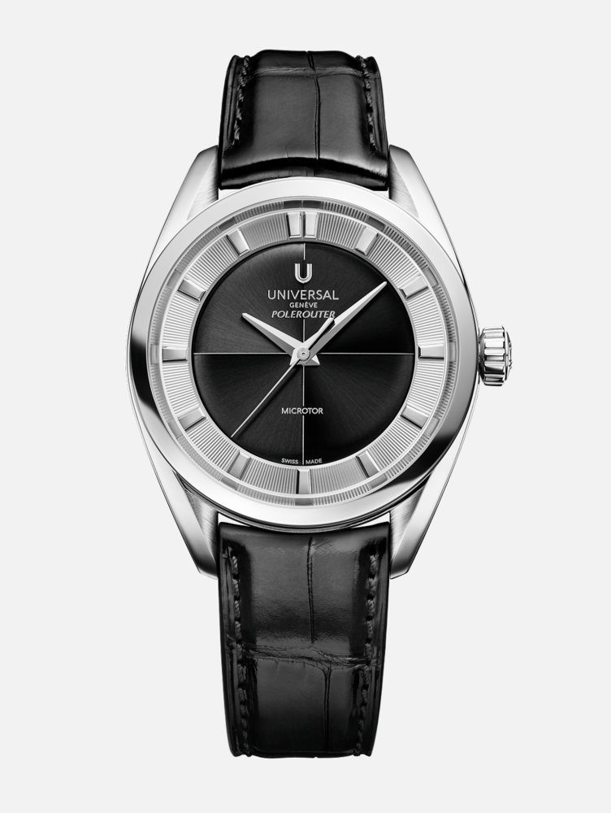
Polerouter, 37mm Prêt-à-Porter
Price not published
View →
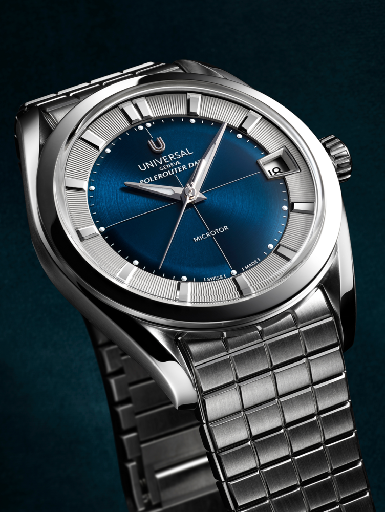
Polerouter Date, 39mm Prêt-à-Porter
Price not published
View →
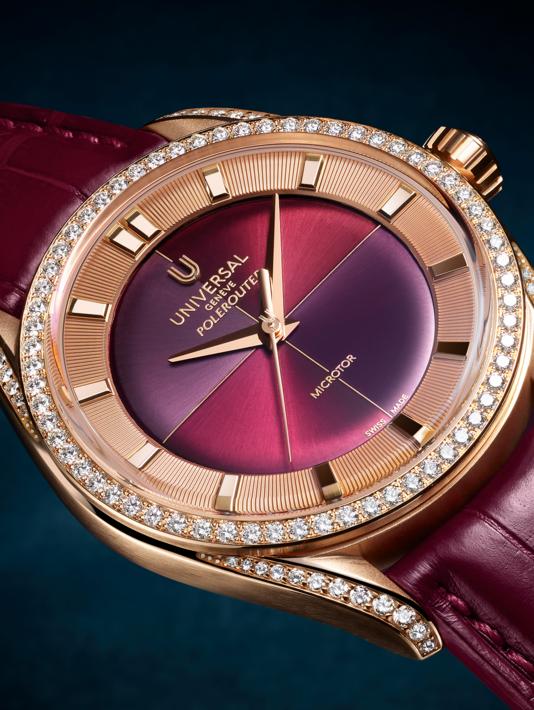
Polerouter Camaïeu
CHF 40,320
View →
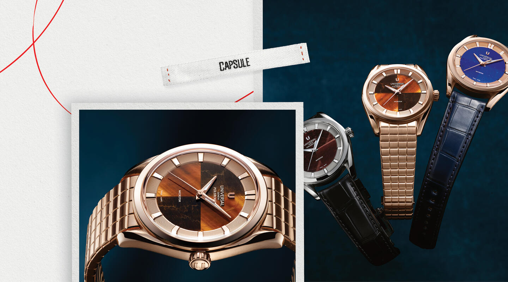
Polerouter Hardstone
Price not published
View →
Universal Genève's site shows collection names (Polerouter, Compax, Cabriolet, Disco Mini, Signature, Capsule, Couture) rather than a searchable catalog with consistent pricing — consistent with its ultra-premium, limited-production positioning. Only the Polerouter Camaïeu displayed a price at time of writing: CHF 40,320 (also shown as $46,368 / £40,750 / €46,800 on the same page). Checked 16 September 2026.
Gallet — 10 references, close to the full published catalog
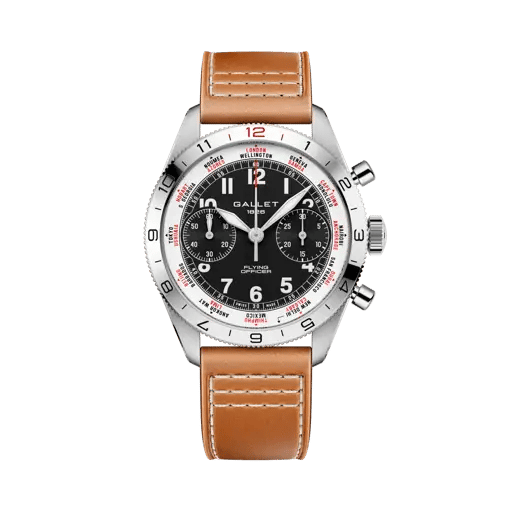
Flying Officer Chronograph 40
€4,100
View →
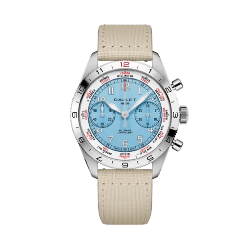
Flying Officer Chronograph 40
€4,100
View →
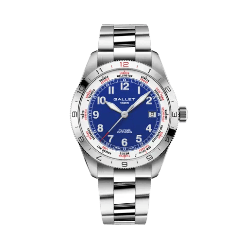
Flying Officer Automatic 40
€2,800
View →
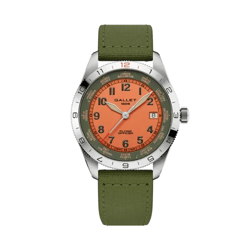
Flying Officer Automatic 40
€2,600
View →
Multichron Pilot Chronograph 42
€4,300
View →
Multichron Pilot Chronograph 42
€4,100
View →
Multichron Sport Chronograph 41
€4,300
View →
Multichron Sport Chronograph 41
€4,100
View →
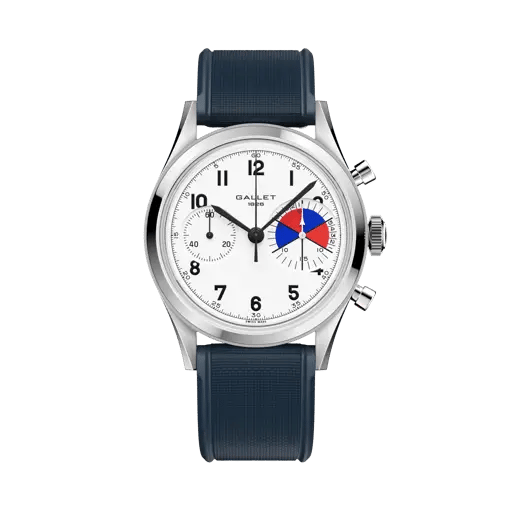
Classics — Tribute to Yachting Big Eye
€6,100
View →
Classics — Tribute to Multichron 45
€6,100
View →
Gallet relaunched under Breitling ownership in 2026 with a small, deliberately limited catalog across four lines (Flying Officer, Multichron Pilot, Multichron Sport, Gallet Classics) — these 10 references are close to its entire published range, not a curated top-10. Prices: official list prices, EUR, gallet.com. Checked 16 September 2026.
Key conclusions
The company
Independent Swiss watchmaker founded 1884. CHF 820 million turnover in 2025 (-3% year-on-year), ranked 9th among Swiss watch brands by turnover. 2,219 employees worldwide, 300 boutiques in 29 countries. Majority-owned by Partners Group; CVC Capital Partners holds a minority stake. Both owners have written down Breitling's valuation to roughly half its 2023 level.
The role
Lead e-Commerce Europe & Managing Director BEU — on-site in Lijnden, Netherlands, reporting to the Global Head of eCommerce & Digital Engagement in Switzerland. Owns the e-commerce budget and targets across EMEA (Europe, Middle East and Africa) and South East Asia, e-commerce logistics and stock planning, market expansion, key partner relationships (payments, logistics), and oversight of multilingual customer service teams in Amsterdam and Hong Kong. Temporary contract; duration not disclosed.
Company context
Turnover peaked at CHF 870 million in 2023 and declined to CHF 820 million in 2025. Breitling UK's filed revenue fell from £89 million to £57.9 million over two years (-24% in the latest filed year). Moody's downgraded Breitling's debt on the earnings decline. The brand is mid-way through a House of Brands expansion (Universal Genève, Gallet) and a boutique rollout, while its private equity owners face a debt refinancing process.
Key opportunity
A revenue and customer-service mandate spanning two regions and two service hubs, inside a business under active cost and margin scrutiny from its owners — the opening is to run e-commerce for EMEA (Europe, Middle East and Africa) and South East Asia as one disciplined P&L, not two.
Contents
- Ownership, turnover & the Swiss watch trade
Ownership timeline, five-year turnover, and where Breitling ranks against Omega, Longines, Tissot.
- 3 structural challenges
A two-region budget · two customer service hubs · declining core markets under owner scrutiny.
- Breitling Europe (BEU) & the operating footprint
The Lijnden entity, the job posting's own responsibilities, and UK market filings.
- How Breitling organizes e-commerce, client relations & anti-fraud
Digital & IT structure, the Client Relations Squad, and how fraud screening is handled.
- Role scope, KPIs & Olga's experience
Every responsibility verbatim from the posting mapped to its KPI and industry benchmark — plus 4 accountability areas mapped to Olga's experience and a 5-step priority stack.
- Leadership & owners
Most likely direct report, regional presidents in scope, CEO, Chief Customer Officer, Chief Commercial Officer, Chief Marketing Officer, board chair.
- Consumer feedback & satisfaction
Trustpilot, PissedConsumer, Yelp, Google boutique ratings — plus/minus themes from 49 reviews read.
Global Turnover 2025
CHF 820M
-3% YoY
Employees Worldwide
2,219
Breitling UK Revenue FY25
£57.9M
-24% YoY
Ownership timeline
From the founding family to two private equity owners now marking the business down
| Date | Event |
|---|
| 1979 | Ernest Schneider buys Breitling from the founding family |
| April 2017 | Theodore Schneider sells an 80% stake to CVC Capital Partners for $870 million; Georges Kern appointed CEO |
| November 2018 | Schneider sells the remaining 20% to CVC |
| December 2022 | Partners Group acquires a majority stake from CVC; Alfred "Fredy" Gantner becomes chairman of the board |
| 2023 | CVC sells a further stake to Partners Group at a $4.5 billion valuation; Partners Group holds just over 50%, CVC retains roughly 23.6% |
| 2025–2026 | CVC and Partners Group write down Breitling's valuation to roughly half its 2023 level (CVC marks its stake at 0.5x invested capital, Partners Group at 0.7x); Moody's downgrades Breitling's debt; owners face a debt refinancing process |
Turnover, 2021–2025
Estimates from the same annual publisher series — Morgan Stanley & LuxeConsult's Swiss Watcher report
| Year | Turnover (CHF) | Note |
|---|
| 2021 | 680 million | — |
| 2023 | 870 million | Peak year |
| 2025 | 820 million | -3% year-on-year; 155,000–160,000 watches produced |
Source: Morgan Stanley & LuxeConsult, Swiss Watcher annual reports.
2025 report
Where Breitling sits — 2025 Swiss watch brand turnover
Full top 10 of the Morgan Stanley & LuxeConsult table — Breitling's immediate competitive set
| Brand | 2025 Turnover (CHF) |
|---|
| 1. Rolex | 11.0 billion |
| 2. Cartier | 3.5 billion |
| 3. Audemars Piguet | 2.6 billion |
| 4. Patek Philippe | 2.5 billion |
| 5. Omega | 2.21 billion |
| Brand | 2025 Turnover (CHF) |
|---|
| 6. Richard Mille | 1.75 billion |
| 7. Longines | 920 million |
| 8. Vacheron Constantin | 914 million |
| 9. Breitling | 820 million |
| 10. Tissot | 720 million |
Only six Swiss brands crossed CHF 1 billion in 2025 wholesale turnover: Rolex, Cartier, Audemars Piguet, Patek Philippe, Omega and Richard Mille. Breitling and Vacheron Constantin sit just below that threshold. TAG Heuer ranked 11th and IWC 12th in the same report.
The Swiss watch export market, 2025
| Figure | Value |
|---|
| Total Swiss watch exports | CHF 25.6 billion (-1.7% year-on-year) |
| Watches specifically (excl. movements/parts) | CHF 24.4 billion (-1.7%) |
| Units exported | 14.6 million (-4.8%) |
2025 was the second consecutive year of decline, driven by weaker Chinese demand and US tariffs on Swiss exports. December 2025 alone was up 3.3% year-on-year.
Source: Federation of the Swiss Watch Industry (FH).
fhs.swiss
Wholesale vs. retail sales value, e-commerce & the boutique split
What is publicly disclosed, and what is not
| Figure | Value | What it measures |
|---|
| Wholesale turnover, 2025 | CHF 820 million | Revenue Breitling books, at wholesale prices — the figure used throughout this brief and in the brand ranking above |
| Estimated retail sales value, 2025 | CHF 1.1 billion | Analyst estimate of what consumers paid at retail price across all channels, down from CHF 1.2 billion in 2023 — not a separate disclosed figure, and not a channel split |
| Own retail network share of revenue | 30% (vs. 15% five years earlier) | Breitling-operated boutiques and stores as a share of total revenue, per Forbes, 27 August 2021, citing Georges Kern — the most recent public figure found; no more current disclosure located |
Boutique operating model: Breitling runs boutiques directly in flagship cities (London, Geneva, Paris, New York among them) and operates the rest through franchise/partner retailers — named partners include Watches of Switzerland Group, The 1916 Company, Westime, Reeds, Berry's, Beaverbrooks and The Hour Glass. In the United Kingdom specifically, close to 30 branded boutiques are mostly run by these external partners rather than Breitling itself. No current public source discloses the exact number split between directly-operated and franchise boutiques, nor an e-commerce-specific share of revenue — Breitling's own case studies describe online-to-boutique conversion (appointments booked online, phone sales of high-value pieces) without quantifying an overall online revenue percentage.
Role Analysis
3 structural challenges this role is built to solve
01
A "Europe" title, an EMEA (Europe, Middle East and Africa) + South East Asia budget
- The role is titled Lead e-Commerce Europe and based at Breitling Europe B.V. (Lijnden), but the posting's own first responsibility is to "own the e-commerce business budget/targets across EMEA and SEA"
- That means one owner for e-commerce performance across markets on two continents, from a Netherlands base
02
Two customer service hubs, one standard
- Multilingual customer service teams in Amsterdam and Hong Kong — both internal and external (outsourced) — sit under this role
- Customer loyalty, retention and online brand strength are named as direct deliverables alongside service oversight
03
Growth mandate inside a business under owner scrutiny
- Global turnover fell from a CHF 870 million peak in 2023 to CHF 820 million in 2025; Breitling UK's filed revenue fell 24% in its latest year
- Both private equity owners have written the business down to roughly half its 2023 valuation and face a debt refinancing process — the role is still asked to "identify opportunities" and "drive revenue growth"
Responsibilities, as written in the posting
| Key Responsibilities (verbatim from the posting) | Requirements (verbatim from the posting) |
|---|
| Lead the local organization, setting strategic priorities and objectives, developing teams | At least 5 years of experience in a senior e-commerce, digital commerce, business development or commercial leadership role |
| Own the e-commerce business budget/targets across EMEA and SEA, identifying opportunities | Proven track record of successfully managing teams and leading cross-functional organizations |
| Develop and implement new sales plans while continuously improving existing e-commerce | Strong experience in e-commerce management, digital operations and business development |
| Lead e-commerce logistics and operational excellence, ensuring seamless end-to-end delivery | Strong commercial and strategic mindset, with demonstrated experience in driving revenue growth |
| Develop and drive customer loyalty and retention initiatives, strengthening online brand presence | Strong analytical and structured approach, with the ability to interpret data and monitor KPIs (key performance indicators) |
| Develop plans to expand the online presence into new markets, identifying opportunities | Proven experience leading complex digital projects across internal and external teams |
| Steer e-commerce stock planning and management across the responsible markets | Experienced in e-commerce platforms, CMS (content management system) and UX/UI (user experience and user interface) best practices |
| Maintain and strengthen relationships with key business partners across payments, logistics | Comfortable working with digital and business tools, including Microsoft Office, Jira, Confluence, GA4 (Google Analytics 4), SAP and Power BI |
| Oversee internal and external multilingual customer service teams (Amsterdam and Hong Kong) | Fluent in English |
Source:
LinkedIn, job posting — reports to the Global Head of eCommerce & Digital Engagement, based in Switzerland.
Breitling UK — filed revenue, three years
Companies House filings for Breitling UK Limited, year to 31 March
| Year to 31 March | Revenue | Pre-tax profit |
|---|
| 2023 | £89.0M (all-time high) | — |
| 2024 | £76.3M | £2.7M |
| 2025 | £57.9M (-24%) | £2.0M |
Breitling attributed the decline to a "challenging" UK retail environment and economic backdrop, while directors stated they remained "satisfied with the performance of the company." The United Kingdom is one of the EMEA markets this role's budget covers.
Source: Companies House, Breitling UK Limited annual accounts, via
CityAM.
Retail & digital strategy, in Georges Kern's own words
| Theme | Quote / fact |
|---|
| Boutique network | Almost 300 boutiques in 29 countries, stated on Breitling's own careers site |
| Omni-channel | "Our omni-channel strategy, which includes e-commerce" — alongside continued investment in independent jewellers |
| Social commerce | "Already well-established in Asia," named as "a key sub-channel, especially for younger consumers" |
| House of Brands | Breitling, Universal Genève (acquired end of 2023) and Gallet (acquired spring 2025) now sit under a shared retail and brand structure |
E-commerce operations
Run by Caroline Lennartz, Global Head of E-Commerce & Digital Engagement (see Leadership, below). Order management: Fluent Commerce, since December 2021. On-site analytics: Contentsquare.
Saleor (commerce)React/Next.js on VercelContentful CMSAlgolia searchAkamai CDNGraphQL
Where Breitling sells online — Europe & South East Asia
breitling.com runs a checkout-enabled, locally-priced site for 138 countries and territories worldwide. Within the role's own scope (EMEA + South East Asia), that covers 48 European markets and 10 South East Asian markets — confirmed live by local-currency pricing at checkout (e.g. Singapore prices in SGD).
Europe — 48 markets
AlbaniaAndorraArmeniaAustriaAzerbaijanBelarusBelgiumBosnia & HerzegovinaBulgariaCroatiaCyprusCzechiaDenmarkEstoniaFinlandFranceGeorgiaGermanyGibraltarGreeceHungaryIcelandIrelandItalyLatviaLiechtensteinLithuaniaLuxembourgMaltaMoldovaMonacoMontenegroNetherlandsNorth MacedoniaNorwayPolandPortugalRomaniaRussiaSerbiaSlovakiaSloveniaSpainSwedenSwitzerlandTürkiyeUkraineUnited Kingdom
South East Asia — 10 markets
BruneiCambodiaIndonesiaLaosMalaysiaMyanmarPhilippinesSingaporeThailandVietnam
Source:
breitling.com, country/currency selector — 138 countries and territories total across all regions (Africa, Europe, Asia, Americas, Middle East, Oceania); figures above are the Europe and South East Asia subsets only.
Client relations / customer service
Branded internally as the "Client Relations Squad." Per this job posting, multilingual customer service runs as both internal and external (outsourced) teams, from two hubs — Amsterdam and Hong Kong. No single published service-level standard covers both hubs.
Anti-fraud & payment security
Fraud screening: Riskified. Payments: Adyen. Tax compliance: Avalara.
Every responsibility, its KPI & industry benchmark
Responsibility (verbatim from the posting)
KPI & industry benchmark
Lead the local organization, setting strategic priorities and objectives, developing teams
Reporting cadence with SwitzerlandStandard executive operating rhythm: a weekly tactical review (30–45 minutes), a monthly performance review and a quarterly strategy reset.
Team developmentThe average employee received 16.7 hours of formal learning in 2025, at an average direct spend of $846 per employee a year.
Cross-functional project deliveryOnly 34% of organizations mostly or always deliver projects on time and on budget; high-process-maturity organizations reach 64–67%.
Mandate handover readinessInterim-management practice treats handover as a process designed from day one, with methods and systems documented and transferred to a named successor.
Own the e-commerce business budget/targets across EMEA and SEA, identifying opportunities
E-commerce revenue vs. budgetBain & Altagamma project the personal luxury goods sector entering 2026 with a 3–5% growth outlook, following a flat 2025.
Market-level revenue growthOnline is on track to become the single largest luxury sales channel, at 28–30% of the global personal luxury goods market in 2025.
Develop and implement new sales plans while continuously improving existing e-commerce
Conversion & average order valueLuxury and jewelry e-commerce converts at 0.8–1.5%, well below the 2.5–3.0% cross-industry average, reflecting longer, research-heavy purchase cycles.
Lead e-commerce logistics and operational excellence, ensuring seamless end-to-end delivery
Order-to-fulfilment cycle time24–48 hours is the standard order-processing target, with total cycle time of 1–3 days for competitive e-commerce operations.
Platform & CMS reliability99.9% uptime is the general industry SLA standard, about 43 minutes of downtime a month.
Develop and drive customer loyalty and retention initiatives, strengthening online brand presence
Customer retention rateLuxury goods repeat-purchase rates run 9.9%–15%, the lowest of any retail category, against a 28.2% e-commerce average across all verticals.
Online brand strengthLuxury brands typically score 60–75 on Net Promoter Score, well above the broader retail industry average of around 45.
Develop plans to expand the online presence into new markets, identifying opportunities
New-market online revenueE-commerce reached 20.5% of total global retail sales in 2025, up from 19.9% in 2024.
Cross-border experience consistencyRetail customer satisfaction (CSAT) averages 76–85%, with above 85% considered strong.
Steer e-commerce stock planning and management across the responsible markets
Stock availability by marketA 95%+ in-stock rate is the standard target; retailers treat availability below 90% as a forecasting failure.
Maintain and strengthen relationships with key business partners across payments, logistics
Payment & logistics partner performanceCard authorization rates average 85–92%, with well-optimized merchants reaching 90–95%; cross-border transactions run 5–15 points lower.
Oversee internal and external multilingual customer service teams (Amsterdam and Hong Kong)
Amsterdam + Hong Kong service standardEmail first-response time averages 7–12 hours industry-wide; live chat averages 1 minute 35 seconds.
Responsibilities:
LinkedIn, job posting. Benchmarks are general industry standards, not figures disclosed by Breitling. Commercial & operations:
Bain, luxury outlook 2026 ·
Bain, online luxury sales ·
e-commerce share of global retail ·
Red Stag, conversion benchmarks ·
Toolio, in-stock rate ·
DCL Logistics, fulfilment metrics ·
GR4VY, payment benchmarks ·
Uptime.com, SLA standards. Customer experience:
Stylograph, repeat-purchase benchmarks ·
Lorikeet, first-response time ·
CustomerGauge, NPS benchmarks ·
SurveySparrow, CSAT benchmarks. Governance:
Umbrex, review cadence ·
ATD, 2026 State of the Industry ·
PM Study Circle, project statistics ·
Bridgespan, interim management
The posting asks for 5+ years in senior e-commerce, digital commerce or business development, a proven track record leading teams and cross-functional organizations, and experience with e-commerce platforms, CMS (content management system) and UX/UI (user experience and user interface). Named tools: Microsoft Office, Jira, Confluence, GA4 (Google Analytics 4), SAP and Power BI. Olga's e-commerce career runs Richemont (2019–2025), adidas (2016–2018), Nike (2010–2016) and IBM (2006–2010) — 19 years, including a Richemont role based in Amsterdam with full P&L ownership of a €150 million e-commerce business across 26 European markets.
01
E-Commerce Budget & Market Growth (EMEA + South East Asia)
Own the e-commerce budget and targets across EMEA and South East Asia; identify growth opportunities; develop and implement sales plans.
P&L ownership
Revenue growth
Market expansion
Olga's experienceRichemont: Director European E-Commerce Sales & Operations, based in Amsterdam — full P&L responsibility for a €150 million e-commerce business spanning 12 luxury Maisons across 26 European countries, delivering 30–250% revenue growth per year.
02
E-Commerce Logistics, Stock & Partner Relationships
Lead e-commerce logistics and operational excellence; steer stock planning across responsible markets; maintain relationships with payments and logistics partners.
Logistics
Stock planning
Partner management
Olga's experienceRichemont: directed logistics collaboration across distribution centres and third-party vendors; led anti-fraud and payment transformation. adidas: designed the EU network of stock points for stock optimisation and client satisfaction.
03
Customer Loyalty, Retention & Multilingual Service Teams
Develop and drive customer loyalty and retention initiatives; oversee internal and external multilingual customer service teams in Amsterdam and Hong Kong.
Retention
CX transformation
Service oversight
Olga's experienceRichemont: transformed the Client Relations Centre from a cost centre into a revenue-generating e-boutique channel, leading a 240+ FTE team spanning e-commerce, digital sales, anti-fraud and client relations across 26 countries.
04
Team Leadership, Platforms & Local Organization
Lead the local organization, set strategic priorities, develop teams; own e-commerce platforms, CMS systems and UX/UI standards.
Team leadership
Platform ownership
Cross-functional delivery
Olga's experienceRichemont: business owner of Salesforce CRM deployments across 26 countries, reporting to the EU CEO and Global Chief Digital Officer. adidas: built the Digital Partner Commerce function from zero. Nike: led the digital transformation of Intersport, the largest European sporting goods retailer, including a SAP Retail implementation.
Priority stack — 5-step approach
| # | Action | Why first | Output |
|---|
| 1 |
Map current state — e-commerce revenue, budget and stock position by market across EMEA and South East Asia |
A budget owned across two regions needs one shared baseline before it can be managed as one target |
Cross-region performance baseline |
| 2 |
Diagnose the weakest markets — starting with the United Kingdom, down 24% in the latest filed year |
Owners under active valuation and debt-refinancing pressure need the largest variances addressed first |
Market-by-market remediation plan |
| 3 |
Align the two customer service hubs — Amsterdam and Hong Kong, internal and external teams, onto one service standard |
Customer loyalty and retention are named deliverables, and today's two-hub structure has no stated shared standard |
Unified service-level framework |
| 4 |
Execute the sales and market-expansion plans — new online markets, platform and CMS/UX improvements |
Turns the baseline and the fixed weak points into the growth plan the role is measured on |
Sales plan & expansion roadmap |
| 5 |
Embed the reporting cadence — with the Global Head of eCommerce & Digital Engagement in Switzerland |
Keeps a temporary mandate accountable and auditable for the length of the assignment |
Standing performance review cadence |
Direct report line
CL
Breitling
Caroline Lennartz
Global Head of E-Commerce & Digital Engagement
Zürich, Switzerland — in role since December 2025; previously Global E-Merchandising Manager at Breitling (August 2022 – November 2025)
The posting names the reporting line only as "Global Head of eCommerce & Digital Engagement, Switzerland" — no individual named. Breitling's own correspondence for this role confirms Caroline Lennartz holds this title. Source:
LinkedIn, Caroline Lennartz.
Regional leadership in scope — EMEA & South East Asia
AS
Breitling
Alvin Soon
President, Greater China & South-East Asia
At Breitling since 2015 — 10 years as regional president, full profit & loss accountability. Previously TAG Heuer, Nokia, Samsung, Lenovo
AA
Breitling Middle East
Aed Adwan
Managing Director, Breitling Middle East, India & Africa
Dubai, United Arab Emirates
?
Breitling Europe
Continental Europe — no separate named GM found
This temporary mandate carries the "Managing Director BEU" title itself
No individual could be independently verified holding a standing "GM/President, Europe" title separate from this role.
South-East Asia and the Middle East / India / Africa each have a single named regional president or managing director. Breitling Europe (BEU) instead runs its own Managing Director seat — the seat this temporary mandate fills — with no separately named continental-Europe GM identified. Sources:
The CEO Magazine, Alvin Soon ·
The Star, April 2026 ·
Arab Watch Guide, Aed Adwan.
Executive board & owners
JP
Breitling
Jean-Marc Pontroué
Chief Executive Officer
Since 1 May 2026, succeeding Georges Kern. Previously CEO of Panerai (Richemont), 2018–2025; earlier Roger Dubuis and Montblanc, 25 years at Richemont overall
GK
House of Brands
Georges Kern
Chief Executive Officer, House of Brands
Moved up from Breitling CEO (April 2017 – April 2026) to lead the House of Brands parent strategy since May 2026. Previously CEO of IWC Schaffhausen (Richemont), 2002–2017
GD
Breitling
Gaelle Devins
Chief Customer Officer & Executive Board Member
Oversees direct-to-consumer channels, CRM and performance analytics. Previously IWC Schaffhausen
NB
Breitling
Nasr-Eddine Benaissa
Chief Commercial Officer
Since September 2017. Previously Partner at McKinsey & Company; Regional Director Middle East & South Asia, TAG Heuer
JK
Breitling
Jancu Koenig
Chief Marketing Officer
Previously Apple, Burberry, J. Walter Thompson, M&C Saatchi
AG
Partners Group
Alfred "Fredy" Gantner
Chairman of Breitling's Board · Co-Founder & Executive Chairman, Partners Group
Chairman since December 2022
Titles and backgrounds: each person's own LinkedIn profile and
The Org, checked 16 September 2026.
No Net Promoter Score (NPS) or Customer Satisfaction Score (CSAT) is published by Breitling. Four third-party sources give a read on customer sentiment instead: Trustpilot and PissedConsumer (both skew heavily to post-purchase service and repair complaints), Yelp (mixed), and Google — which has no single brand-wide score, because Breitling boutiques are listed individually, market by market. This role owns customer loyalty and retention initiatives and the Amsterdam/Hong Kong service teams directly, per the posting's own responsibilities table in Section 03.
Trustpilot TrustScore
2.2/5
377 reviews
PissedConsumer
1.7/5
11% full resolution
Google — sampled boutiques
4.6/5
Los Angeles, San Antonio, Toronto
Individually listed, no single brand score
Trustpilot rating breakdown — breitling.com
| Rating | Share of reviews |
|---|
| 5-star | 25% |
| 4-star | 1% |
| 3-star | 2% |
| 2-star | 4% |
| 1-star | 68% |
Google — no single brand score, boutiques listed individually
Three flagship boutiques sampled, via each boutique's own Google Business listing
| Boutique | Google rating |
|---|
| Los Angeles | 4.6 / 5 |
| San Antonio | 4.7 / 5 |
| Toronto | 4.6 / 5 |
Breitling has no company-wide Google review score — each boutique (directly-run or franchise-partner) carries its own Google Business listing and rating. The three sampled here run well above Breitling's Trustpilot and PissedConsumer scores, both of which measure the .com and after-sales/repair channel rather than the in-boutique experience.
Source: TrustAnalytica boutique listings (aggregating Google reviews), checked 16 September 2026.
Trustpilot doesn't publish a themed breakdown, so the split below is a qualitative reading of a real sample: 40 Trustpilot reviews (breitling.com, most recent) and 9 PissedConsumer reviews, individually read. Bar widths are relative frequency within that sample — not a count of all 377 Trustpilot reviews.
Negative themes — sampled reviews
Repair cost, quality & turnaround
45%
Boutique/staff service inconsistency
20%
Product durability faults
15%
Delivery & logistics delays
10%
Other (buyback offers, subscriptions)
10%
Positive themes — sampled reviews
Knowledgeable, attentive boutique staff
45%
Fast, professional individual support
25%
Service/repair completed as quoted
20%
Registration & warranty assistance
10%
Theme shares estimated from reading the 40 Trustpilot and 9 PissedConsumer reviews individually — not a counted sample of the full review base.
-
1
45%Repair cost, quality & turnaround
The dominant complaint, on both Trustpilot and PissedConsumer: repair quotes seen as disproportionate to watch value (a £700 and later £840 repair bill on a £6,000 watch; a $1,000 service charge on a $10,000 watch after water damage), multi-week to multi-month turnaround (one PissedConsumer case: 6 months, resulting in total watch failure), and Breitling's policy of not selling spare parts (crowns, rubber straps) independently, which several reviewers describe as forcing a full paid service.
Highest complaint volume in both samples
PissedConsumer: 11% full resolution rate
-
2
20%Boutique/staff service inconsistency
The same brand produces both extremes in this sample: a Plymouth boutique praised as "superior to other watch retailers" sits beside a Rome boutique described as "rude and dismissive," and a Bond Street visit where staff reportedly showed no interest in a repeat customer. This mirrors the boutique network's own structure (Section 01) — a mix of directly-run and independently-operated franchise boutiques, each setting its own service bar.
Consistency, not capability, is the gap
-
3
15%Product durability faults
Recurring reports of a crown detaching within months on a gold Superocean, water ingress despite a 300m rating, and general timekeeping complaints. A small share of the sample, but the kind of fault that triggers the repair-cost complaints above.
-
4
10%Delivery & logistics delays
A watch promised for 1–2 day pickup arriving after 9 days; a birthday-gift order delayed by what a reviewer described as a quality-control hold. A minority theme, but a direct-fit issue for this role's own stock-planning and logistics responsibilities.
-
5
10%Buyback offers & subscription handling
A trade-in/buyback offer described as significantly below market value, and a subscription-model case (PissedConsumer) where payments continued for three months after a watch was reported stolen, with no pause or credit offered.
Positive themes — sampled reviews
-
1
45%Knowledgeable, attentive boutique staff
The single most-cited positive across both Trustpilot and the sampled Google boutique reviews: named staff members praised for product knowledge, patience and going beyond a standard sale. This is the same boutique network flagged as inconsistent above — when it works, it is the brand's clearest strength.
Also the top driver of 4.6–4.7/5 Google boutique ratings
-
2
25%Fast, professional individual support
Reviewers naming a specific customer-service representative by name for a quick, professional resolution — evidence the underlying service capability is there when a case is handled well.
-
3
20%Service/repair completed as quoted
When a full service is delivered within the quoted time and price, reviewers respond with five-star ratings — direct evidence that the service operation can meet its own stated standard, when it does.
-
4
10%Registration & warranty assistance
Straightforward, well-handled warranty registration is repeatedly called out as a positive first-touch experience.